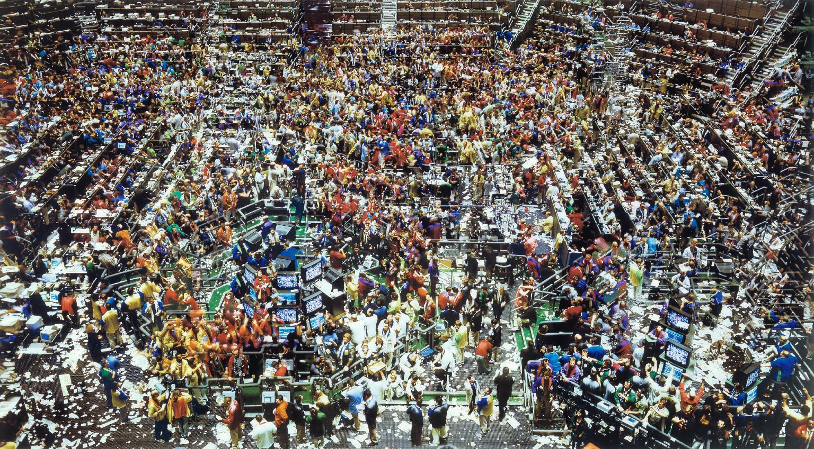

The first phase of circulation is, as it were, a theoretical phase preparatory to real circulation. Commodities, which exist as use-values, must first of all assume a form in which they appear to one another nominally as exchange-values, as definite quantities of materialised universal labour-time. The first necessary move in this process is, as we have seen, that the commodities set apart a sepcific commodity, say, gold, which becomes the direct reification of universal labour-time or the universal equivalent. Let us return for a moment to the form in which gold is converted into money by commodities.
| 1 ton of iron | = 2 ounces of gold |
| 1 quarter of wheat | = 1 ounce of gold |
| 1 hundredweight of Mocha coffee | = ¼ ounce of gold |
| 1 hundredweight of potash | = ½ ounce of gold |
| 1 ton of Brazil-timber | = 1½ ounces of gold |
| Y commodities | = X ounces of gold |
In this series of equations iron, wheat, coffee, potash, etc., appear to one another as materialisation of uniform labour, that is labour materialised in gold, in which all distinctive features of the concrete labour represented in the different use-values are entirely obliterated. They are as values identical, i.e., materialisations of the same labour or the same materialisation of labour – gold. Since they are uniform materialisations of the same labour, they differ only in one way, quantitatively: in other words they represent different magnitudes of value, because their use-values contain unequal amounts of labour-time. These individual commodities can be compared with one another as embodiments of universal labour-time, since they have been compared with universal labour-time in the shape of the excluded commodity, i.e., gold. The same dynamic relation, as a result of which commodities become exchange-values for one another, causes the labour-time contained in gold to represent universal labour-time, a given amount of which is expressed in different quantities of iron, wheat, coffee, etc., in short in the use-values of all commodities, or it may be displayed direclty in the infinite series of commodity equivalents. Since the exchange-value of all commodities is expressed in gold, the exchange-value of gold is directly expressed in all commodities. Because the commodities themselves assume the form of exchange-value for one another, they turn gold into the universal equivalent or into money.
Gold becomes the measure of value because the exchange-value of all commodities is measured in gold, is expressed in the relation of a definite quantity of gold and a definite quantity of commodity containing equal amounts of labour-time. To begin with, gold becomes the universal equivalent, or money, only because it thus functions as the measure of value and as such its own value is measured directly in all commodity equivalents. The exchange-value of all commodities, on the other hand, is now expressed in gold. One has to distinguish a qualitative and a quantitative aspect in this expression. The exchange-value of the commodity exists as the embodiment of equal uniform labour-time, the value of the commodity is thus fully expressed, for to the extent that commodities are equated with gold they are equated with one another. Their golden equivalent reflects the universal character of the labour-time contained in them on the one hand, and its quantity on the other hand. The exchange-value of commodities thus expressed in the form of universal equivalence and simultaneously as the degree of this equivalence in terms of a specific commodity, that is a single equation in which commodities are compared with a specific commodity, constitutes price. Price is the converted form in which the exchange-value of commodities appears within the circulation process.
Thus as a result of the same process through which the values of commodities are expressed in gold prices, gold is transformed into the measure of value and thence into money. If the values of all commodities were measured in silver or wheat or copper, and accordingly expressed in terms of silver, wheat or copper prices, then silver, wheat or copper would become the measure of value and consequently universal equivalents. Commodities as exchange-values must be antecedent to circulation in order to appear as prices in circulation. Gold becomes the measure of value only because the exchange-value of all commodities is estimated in terms of gold. The universality of this dynamic relation, from which alone springs the capacity of gold to act as a measure, presupposes however that every single commodity is measured in terms of gold in accordance with the labour-time contained in both, so that the real measure of commodity and gold is labour itself, that is commodity and gold are as exchange-values equated by direct exchange. How this equating is carried through in practice cannot be discussed in the context of simple circulation. It is evident, however, that in countries where gold and silver are produced a definite amount of labour-time is directly incorporated in a definite quantity of gold and silver, whereas countries which produce no gold and silver arrive at the same result in a roundabout way, by direct or indirect exchange of their home products, i.e., of a definite portion of their average national labour, for a definite quantity of labour-time embodied in the gold and silver of countries that possess mines. Gold must be in principle a variable value, if it is to serve as a measure of value, because only as reification of labour-time can it become the equivalent of other commodities, but as a result of changes in the productivity of concrete labour, the same amount of labour-time is embodied in unequal volumes of the same type of use-values.
The valuation of all commodities in terms of gold – like the expression of the exchange-value of any commodity in terms of the use-value of another commodity – merely presupposes that at a given moment gold represents a definite quantity of labour-time. The law of exchange-value set forth earlier applies to changes occurring in the value of gold. If the exchange-value of commodities remains unchanged, then a general rise of their prices in terms of gold can only take place when the exchange-value of gold falls. If the exchange-value of gold remains unchanged, then a general rise of prices in terms of gold is only possible if the exchange-values of all commodities rise. The reverse takes place in the case of a general decline in the prices of commodities. If the value of an ounce of gold falls or rises in consequence of a change in the labour-time required for its production, then it will fall or rise equally in relation to all other commodities and will thus for all of them continue to represent a definite volume of labour-time. The same exchange-values will now be estimated in quantities of gold which are larger or smaller than before, but they will be estimated in accordance with their values and will therefore maintain the same value relative to one another. The ratio 2:4:8 remains the same whether it becomes 1:2:4 or 4:8:16. The fact that, because of the changing value of gold, exchange-values are represented by varying quantities of gold does not prevent gold from functioning as the measure of value, any more than the fact that the value of silver is one-fifteenth of that of gold prevents silver from taking over this function. Labour-time is the measure of both gold and commodities, and gold becomes the measure of value only because all commodities are measured in terms of gold; it is consequently merely an illusion created by the circulation process to suppose that money makes commodities commensurable. On the contrary, it is only the commensurability of commodities as materialised labour-time which converts gold into money.
Source